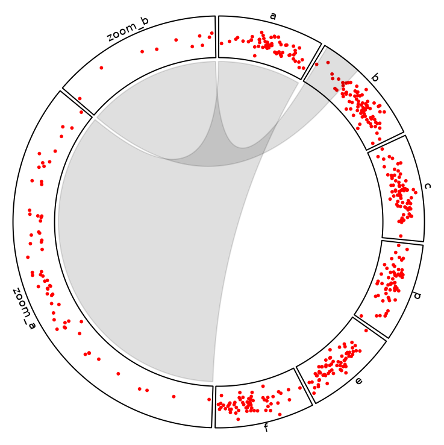
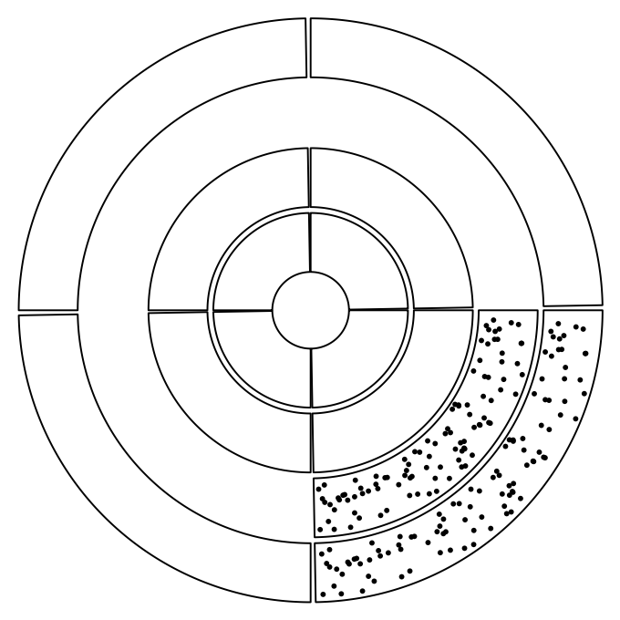
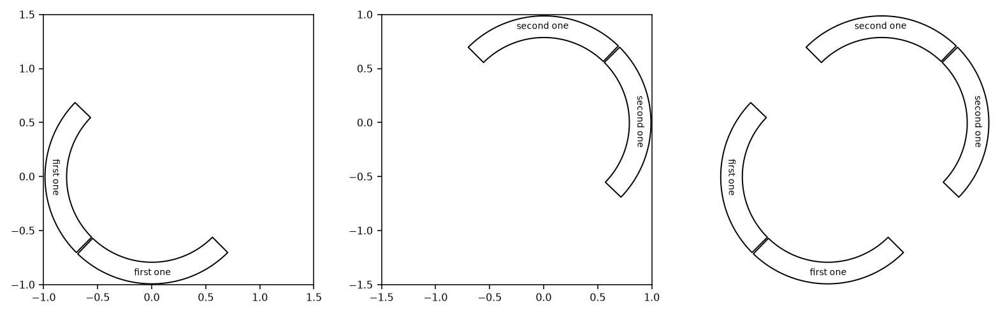

7 Advanced layout#
7.1 Zooming of sectors#
Under default settings, sector angular widths are proportional to
each category’s data range (xlim). By duplicating subsets
of data under new sector names and specifying custom
sector_width proportions, you can place original sectors on
one portion of the circle and zoomed copies of selected sectors on the
remainder.
Suppose we generate a DataFrame with six sectors ("a"
through "f") and wish to zoom all of sector
"a" together with the 10 smallest-x points of
sector "b":
import numpy as np
import pandas as pd
from circlize import CELL_META, circos, get_cell_meta_data, mm_y
rng = np.random.default_rng(123)
df = pd.DataFrame(
{
"sectors": rng.choice(list("abcdef"), size=400, replace=True),
"x": rng.normal(size=400),
"y": rng.normal(size=400),
}
)
zoom_df_a = df[df["sectors"] == "a"].copy()
zoom_df_b = df[df["sectors"] == "b"].sort_values("x").iloc[:10].copy()
zoom_df = pd.concat([zoom_df_a, zoom_df_b], ignore_index=True)
zoom_df["sectors"] = "zoom_" + zoom_df["sectors"]
df2 = pd.concat([df, zoom_df], ignore_index=True)Next, normalize the widths of the normal sectors and zoomed sectors
separately so that each group sums to 1 (giving each group
roughly half of the circle, aside from sector gaps). Pass
pd.Categorical(..., categories=sector_order, ordered=True)
so sector_width matches the exact sector order:
normal_sectors = list("abcdef")
zoomed_sectors = ["zoom_a", "zoom_b"]
sector_order = normal_sectors + zoomed_sectors
xrange = df2.groupby("sectors")["x"].agg(lambda s: float(s.max() - s.min()))
norm_sum = float(xrange.loc[normal_sectors].sum())
zoom_sum = float(xrange.loc[zoomed_sectors].sum())
sector_width = [float(xrange[s]) / norm_sum for s in normal_sectors] + [
float(xrange[s]) / zoom_sum for s in zoomed_sectors
]
sectors_cat = pd.Categorical(df2["sectors"], categories=sector_order, ordered=True)Because sector labels are drawn just outside the first track
(cell_ylim[1] + mm_y(2)), set
points_overflow_warning=False. Then draw transparent links
connecting the original intervals to their zoomed counterparts—setting
rou1 on "b" so that link attaches cleanly to
the outer border of sector "b":
circos.par(start_degree=90, points_overflow_warning=False)
circos.initialize(sectors_cat, x=df2["x"], sector_width=sector_width)
def panel_zoom(x, y):
circos.points(x, y, col="red", pch=16, cex=0.5)
circos.text(
CELL_META.xcenter,
CELL_META.cell_ylim[1] + mm_y(2.0),
CELL_META.sector_index,
nice_facing=True,
)
circos.track(sectors_cat, x=df2["x"], y=df2["y"], panel_fun=panel_zoom)
circos.link(
"a",
get_cell_meta_data("cell.xlim", sector_index="a"),
"zoom_a",
get_cell_meta_data("cell.xlim", sector_index="zoom_a"),
border=None,
col="#00000020",
)
circos.link(
"b",
[float(zoom_df_b["x"].iloc[0]), float(zoom_df_b["x"].iloc[9])],
"zoom_b",
get_cell_meta_data("cell.xlim", sector_index="zoom_b"),
rou1=get_cell_meta_data("cell.top.radius", sector_index="b"),
border=None,
col="#00000020",
)
circos.clear()
The Nested zooming chapter covers an alternative zooming approach that nests two complete circular layouts on one canvas.
7.2 Visualize part of the circle#
Every circular plot is drawn on a Cartesian canvas spanning
[-1, 1] × [-1, 1] by default. Restricting
canvas_xlim and canvas_ylim in
circos.par() reveals only part of the circle. Setting both
to (0.0, 1.0) zooms the canvas to the top-right quadrant
(0° to 90°), and pairing a single sector with
start_degree=90 and gap_after=270 restricts
that sector to that exact 90° arc:
circos.par(canvas_xlim=(0.0, 1.0), canvas_ylim=(0.0, 1.0), start_degree=90, gap_after=270)
circos.initialize(["a"], xlim=(0.0, 1.0))
circos.track(
df["sectors"],
x=df["x"],
y=df["y"],
panel_fun=lambda x, y: circos.points(x, y, pch=16, cex=0.5),
)
circos.track(
df["sectors"],
x=df["x"],
y=df["y"],
panel_fun=lambda x, y: circos.lines(np.arange(1, 101) / 100.0, y),
)
circos.clear()
You can also show only a subset of cells within selected tracks while keeping the full circle layout. Two patterns are common:
- Pass a subset of sectors (
df["sectors"]) directly tocircos.track()sopanel_funruns only in those sectors. - Create a borderless empty track (
bg_border=None) and selectively reveal and populate cells withcircos.update(sector_index="a", bg_border="black").
sectors = list("abcd")
circos.initialize(sectors, xlim=(0.0, 1.0))
# Method 1: subset of sectors in circos.track()
circos.track(
df["sectors"],
x=df["x"],
y=df["y"],
panel_fun=lambda x, y: circos.points(x, y, pch=16, cex=0.5),
)
# Method 2: empty track + circos.update()
circos.track(ylim=(float(df["y"].min()), float(df["y"].max())), bg_border=None)
circos.update(sector_index="a", bg_border="black")
circos.points(df["x"], df["y"], pch=16, cex=0.5)
circos.track(sectors=sectors, ylim=(0.0, 1.0))
circos.track(sectors=sectors, ylim=(0.0, 1.0))
circos.clear()
7.3 Combine multiple circular plots#
In Matplotlib, calling circos.initialize() directly on
an already-used Axes clears previous artists
(ax.cla()). To layer multiple independent circular plots
onto the same region of a figure, call circos.clear() after
finishing the first circle and then create a transparent overlay
Axes matching the base axes position before starting the
next circle. The shared book helper
_common.overlay_axes(fig, base_ax) encapsulates that
pattern:
def overlay_axes(fig, base_ax=None):
if base_ax is None:
base_ax = fig.axes[0] if fig.axes else fig.add_subplot(111)
ax = fig.add_axes(base_ax.get_position(), frameon=False)
ax.patch.set_alpha(0.0)
ax.set_axis_off()
plt.sca(ax)
return axImportant: Always finalize subplot margins (such as
fig.subplots_adjust(...)) before callingoverlay_axes(fig, base_ax), becausefig.add_axes(...)copiesbase_ax.get_position()at call time and does not move automatically if subplot parameters change later.
By combining overlay_axes() with
canvas_xlim=(-2.0, 2.0) and
canvas_ylim=(-2.0, 2.0), a second circular plot scales to
half radius and sits concentrically inside the first:
fig = plt.figure(figsize=(11.4, 3.9), dpi=140, facecolor="white")
ax1, ax2, ax3 = fig.subplots(1, 3)
fig.subplots_adjust(left=0.05, right=0.98, top=0.94, bottom=0.10, wspace=0.25)
# ... draw outer circle on ax1 (canvas [-1, 1]) and inner circle on ax2 (canvas [-2, 2]) ...
plt.sca(ax3)
circos.initialize(list("abcd"), xlim=(0.0, 1.0))
circos.track(
ylim=(0.0, 1.0),
panel_fun=lambda x, y: circos.text(0.5, 0.5, "outer circos", nice_facing=True, cex=0.75),
)
circos.clear()
overlay_axes(fig, ax3)
circos.par(canvas_xlim=(-2.0, 2.0), canvas_ylim=(-2.0, 2.0))
circos.initialize(list("abc"), xlim=(0.0, 1.0))
circos.track(
ylim=(0.0, 1.0),
panel_fun=lambda x, y: circos.text(0.5, 0.5, "inner circos", nice_facing=True, cex=0.5),
)
circos.clear()
Shifting asymmetric canvas_xlim and
canvas_ylim ranges separates two circular arcs across the
canvas so they face each other without overlapping:
plt.sca(ax3)
circos.par(canvas_xlim=(-1.0, 1.5), canvas_ylim=(-1.0, 1.5),
start_degree=-45, points_overflow_warning=False)
circos.initialize(sectors, xlim=(0.0, 1.0))
circos.track(ylim=(0.0, 1.0), bg_col=None, bg_border=None)
circos.update(sector_index="a")
circos.text(0.5, 0.5, "first one", nice_facing=True, cex=0.7)
circos.update(sector_index="b")
circos.text(0.5, 0.5, "first one", nice_facing=True, cex=0.7)
circos.clear()
overlay_axes(fig, ax3)
circos.par(canvas_xlim=(-1.5, 1.0), canvas_ylim=(-1.5, 1.0),
start_degree=-45, points_overflow_warning=False)
circos.initialize(sectors, xlim=(0.0, 1.0))
circos.track(ylim=(0.0, 1.0), bg_col=None, bg_border=None)
circos.update(sector_index="d")
circos.text(0.5, 0.5, "second one", nice_facing=True, cex=0.7)
circos.update(sector_index="c")
circos.text(0.5, 0.5, "second one", nice_facing=True, cex=0.7)
circos.clear()
Repeating the overlay trick in a loop with increasing
canvas_xlim / canvas_ylim bounds lets each
sector belong to an independent circular layout with its own outer
radius:
sectors = list("abcd")
lim = [1.0, 1.1, 1.2, 1.3]
fig = plt.figure(figsize=(6.2, 6.2), dpi=140, facecolor="white")
base_ax = fig.add_subplot(111)
for i, lval in enumerate(lim):
if i == 0:
plt.sca(base_ax)
else:
overlay_axes(fig, base_ax)
circos.par(canvas_xlim=(-lval, lval), canvas_ylim=(-lval, lval), track_height=0.4)
circos.initialize(sectors, xlim=(0.0, 1.0))
circos.track(ylim=(0.0, 1.0), bg_border=None)
circos.update(sector_index=sectors[i], bg_border="black")
circos.points(rng.uniform(size=10), rng.uniform(size=10), pch=16)
circos.clear()
Notice the difference between this figure and the subset-of-cells
figure earlier in the chapter: there, all cells belonged to the same
track and shared one radius; here, each cell belongs to its own overlaid
circular plot and therefore takes an independent radius. See the Nested zooming chapter for applying
this overlay technique to circos.nested().
7.4 Arrange multiple plots#
Because each circular plot targets the currently active Matplotlib
Axes, standard plt.subplots() or
GridSpec grids arrange multiple independent circular plots
on one page. Just select each subplot with plt.sca(ax) and
call circos.clear() at the end of each panel:
rng = np.random.default_rng(12345)
fig, axes = plt.subplots(3, 3, figsize=(8.4, 8.4), dpi=140, facecolor="white")
sectors = [str(k) for k in range(1, 9)]
for ax in axes.ravel():
plt.sca(ax)
circos.par(cell_padding=(0.0, 0.0, 0.0, 0.0))
circos.initialize(sectors, xlim=(0.0, 1.0))
circos.track(ylim=(0.0, 1.0), track_height=0.05, bg_col=rand_color(8), bg_border=None)
for _ in range(20):
s1, s2 = rng.choice(sectors, size=2, replace=False)
circos.link(
str(s1), rng.uniform(size=2),
str(s2), rng.uniform(size=2),
col=rand_color(1, transparency=0.4)[0],
border=None,
)
circos.clear()